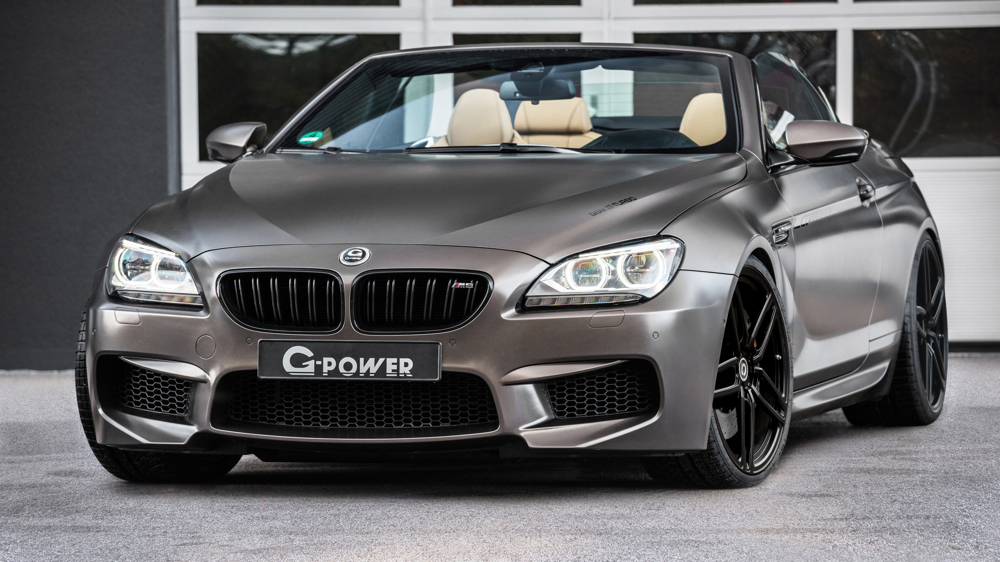

With the 2014 Competition Package, the M6 comes with a sportier exhaust system with black tips, stiffer springs, dampers, and anti-roll bars, steering is more direct than the base M6, the twin-turbocharged V8 engine utilised in the M6 is updated and is rated at 423 kW (567 hp) and 680 N⋅m (502 lb⋅ft) of torque. This results in a 0 to 100 km/h (62 mph) acceleration time of 3.9 seconds for the coupe and Gran Coupe versions.[30] In 2016, the Competition Pack engine was upgraded to 441 kW (591 hp) and 700 N⋅m (516 lb⋅ft) of torque, resulting in a 0 to 100 km/h (62 mph) acceleration time of 3.8 seconds for the coupe and Gran Coupe versions.[31]
 If You Want More Information, Click The Image or This TextWe can see this beauty's acceleration and attractive sound. It's unbeliaveble
Coded by Ismayil Ibra